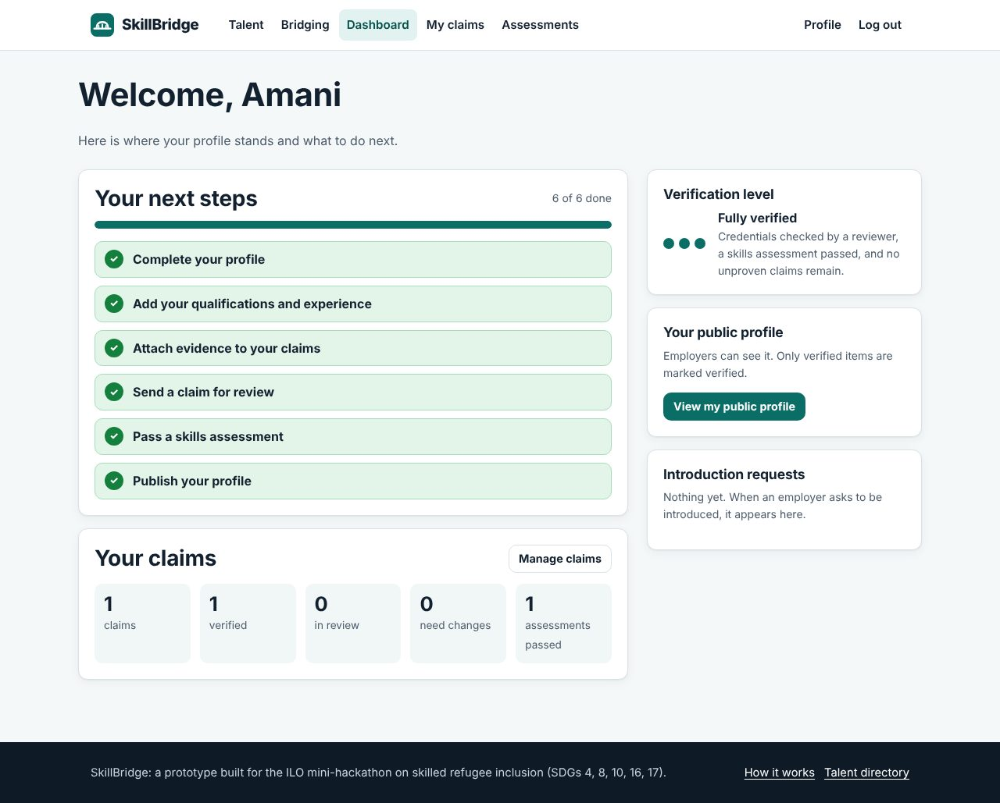
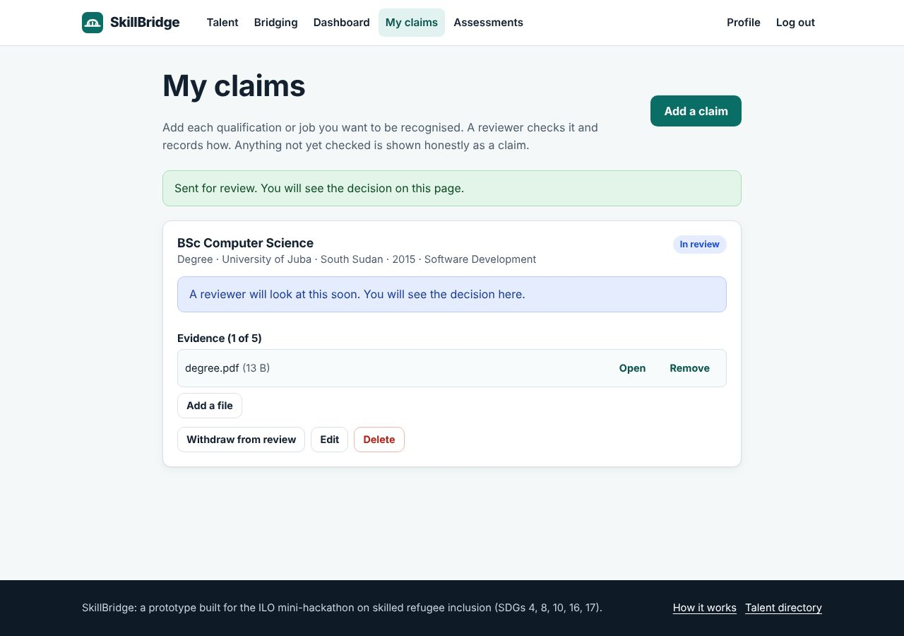
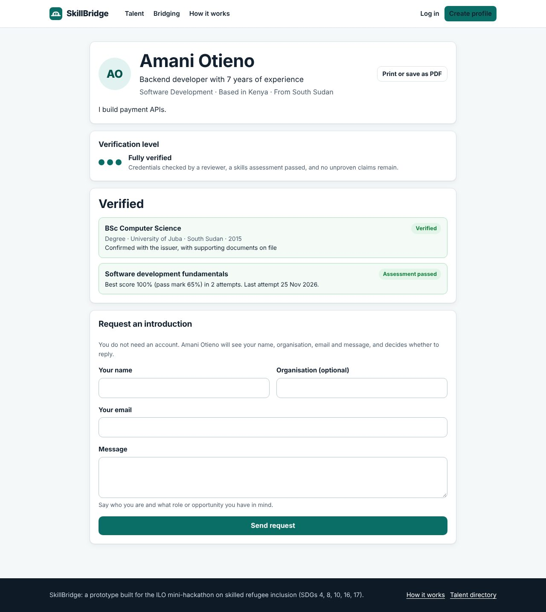
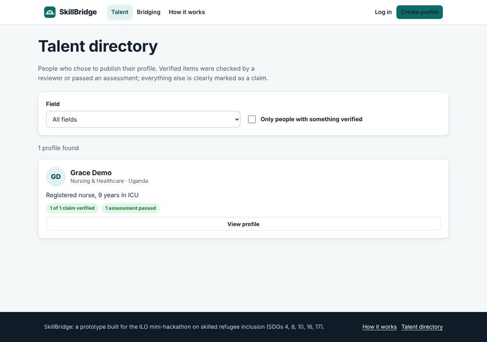
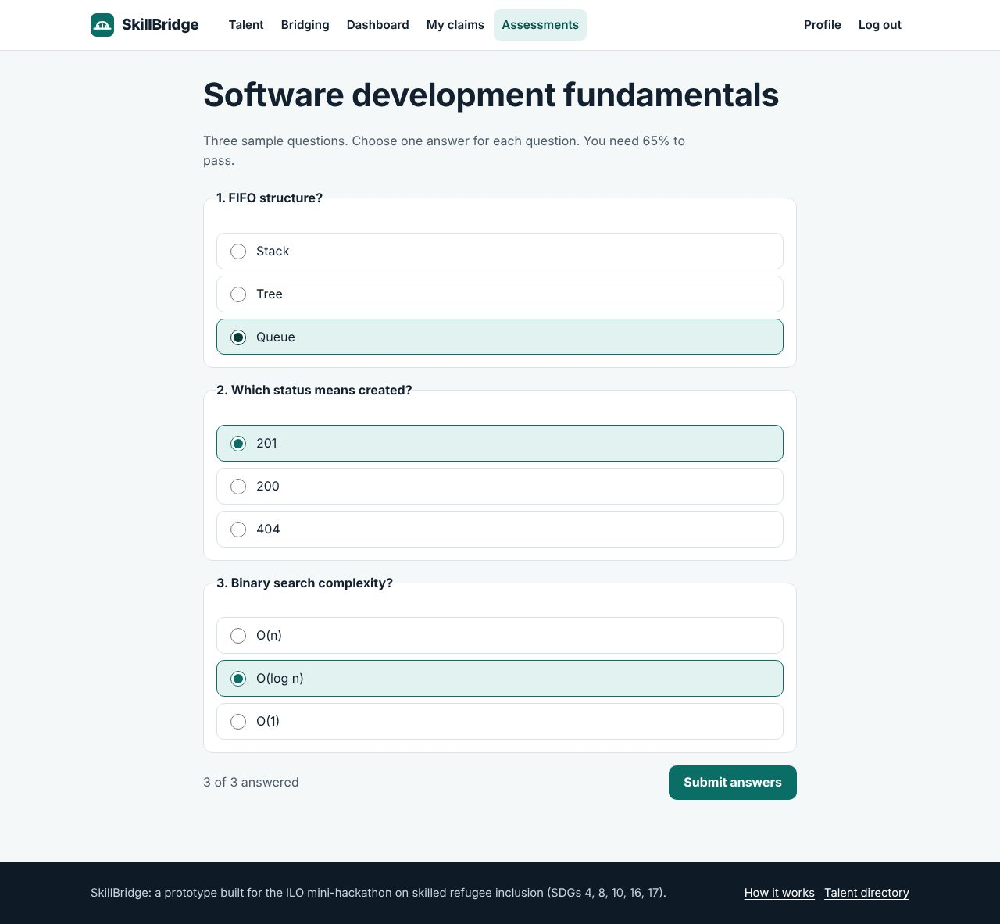
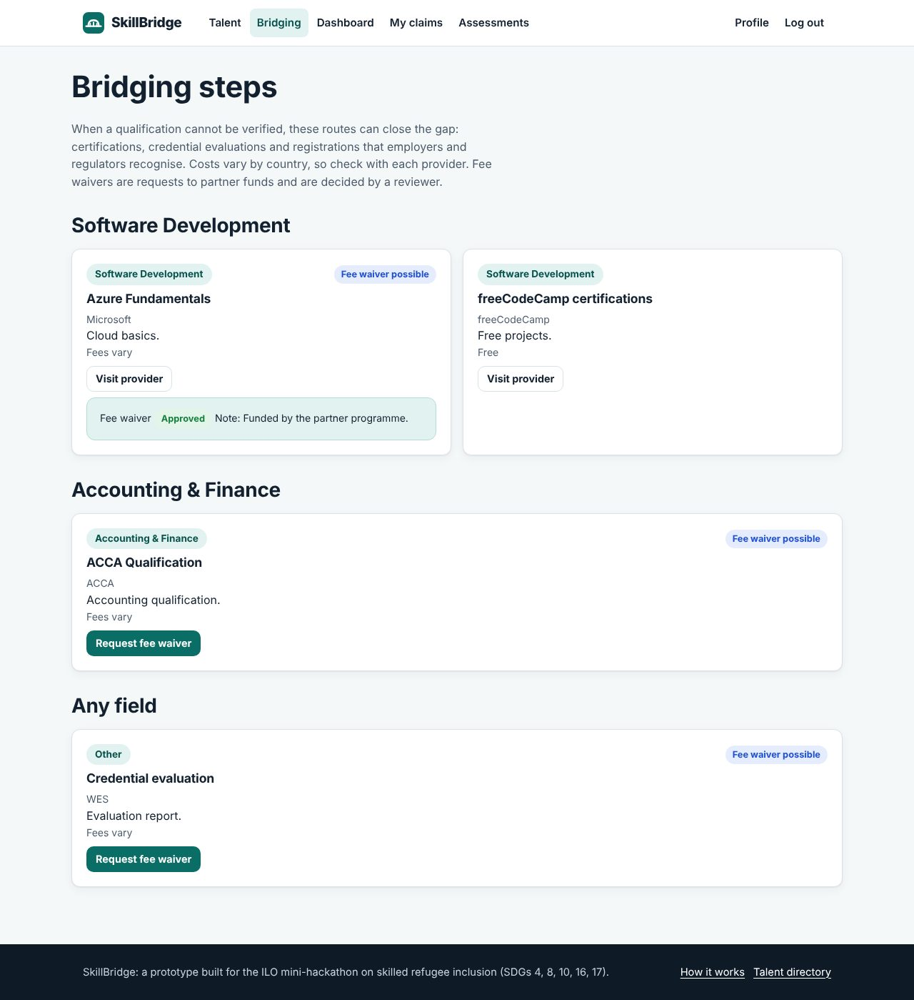

A way for skilled refugees to turn qualifications and experience into evidence that employers can trust, and be honest about what is still unproven.
People flee with what they can carry. Degrees, licences and reference letters are left behind, destroyed, or impossible to request from an issuer in a conflict zone.
Hiring and registration usually accept paper and nothing else. A nurse or an accountant is pushed into work far below their skill. That waste is called brain waste.
Most are not unwilling. They simply have no trustworthy way to separate verified experience from a claim, so the safest choice is to say no.
The gap is not skill. It is believable evidence.
List qualifications and experience. Attach whatever evidence exists. A claim can be sent with no files.
A reviewer opens the evidence and records how it was verified: documents, issuer, reference or interview.
Short assessments, scored on the server, show baseline knowledge when paper cannot.
Gaps point to a recognised certification, evaluation or registration, with a fee-waiver request.
A public profile shows verified and claimed separately. Employers send an introduction, no account needed.


Evidence attached: diploma-scan.pdf (opens through a link that expires in five minutes)
How was this verified?
● Documents reviewed ○ Issuer confirmed
○ Reference checked ○ Interview
Rejected claims come back with a note on what is missing. A reviewer cannot review their own claims.


Approved by a reviewer, with the method shown.
Claimed, not yet verifiedShown honestly, never dressed up as proof.


| Benchmark | What it does |
|---|---|
| Credential and skills verification | Every claim has a status and a recorded method. Assessments are scored server-side. Levels 0 to 3 summarise the result. |
| Access and compliance readiness | Bridging routes name the certifications, credential evaluations and registrations that unlock formal work, with reviewed fee-waiver requests. |
| Practical and market fit | Public profiles show exactly what is verified and how. Employers filter the directory and introduce themselves directly. |
| Social and SDG impact | SDG 8 decent work, SDG 4 education and upskilling, SDG 10 reduced inequalities, SDG 16 transparent institutions, SDG 17 partnerships. |
| Sustainability and scalability | Reviewers are the only manual step and any NGO, university or professional body can supply them. New fields are rows, not code. Hosting costs almost nothing. |
Covered by security tests that run against a real PostgreSQL.
Real: accounts, claims, uploads, reviewer decisions, server-side scoring, public profiles, the directory, introductions and fee-waiver requests, on a live database.
Starter content: the assessments are short knowledge screens, not licences. Fee-waiver availability stands in for partner funds. Demo profiles are fictional and marked.
NGOs, universities and professional bodies run their own queues.
Translations and a low-bandwidth mode for the people who need it most.
Issuer confirmation by secure link, employer accounts and anonymised partner reports.